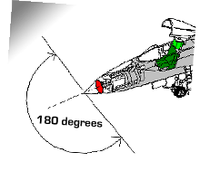

Azimuth Blanking
Azimuth blanking refers to a safety mechanism commonly found in search radars, where the system stops emitting energy when the antenna is pointed at a particular angle either horizontally or vertically. It is used to prevent ground structures from interfering with the radar and to prevent RFR hazards to personnel.